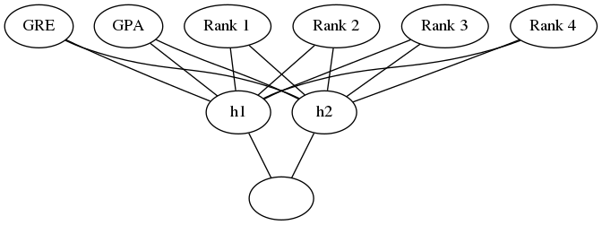

Backpropagation Implementation (Again)
Table of Contents
This is an example of implementing back-propagation using the UCLA Student Admissions data that we used earlier for training with gradient descent.
Set Up
Imports
Python
import itertools
PyPi
from graphviz import Graph
from sklearn.model_selection import train_test_split
from sklearn.preprocessing import scale
import numpy
import pandas
This Project
from neurotic.tangles.data_paths import DataPath
from neurotic.tangles.helpers import org_table
Set the Random Seed
numpy.random.seed(21)
Helper Functions
Once again, the sigmoid.
def sigmoid(x):
"""
Calculate sigmoid
"""
return 1 / (1 + numpy.exp(-x))
The Data
We are using data originally take from the UCLA Institute for Digital Research and Education representing a group of students who applied for grad school at UCLA.
path = DataPath("student_data.csv")
data = pandas.read_csv(path.from_folder)
print(org_table(data.head()))
| admit | gre | gpa | rank |
|---|---|---|---|
| 0 | 380 | 3.61 | 3 |
| 1 | 660 | 3.67 | 3 |
| 1 | 800 | 4 | 1 |
| 1 | 640 | 3.19 | 4 |
| 0 | 520 | 2.93 | 4 |
Pre-Processing the Data
Dummy Variables
Since the rank values are ordinal, not numeric, we need to create some one-hot-encoded columns for it using get_dummies.
rank_counts = data["rank"].value_counts()
data = pandas.get_dummies(data, columns=["rank"], prefix="rank")
for rank in range(1, 5):
assert rank_counts[rank] == data["rank_{}".format(rank)].sum()
print(org_table(data.head()))
| admit | gre | gpa | rank_1 | rank_2 | rank_3 | rank_4 |
|---|---|---|---|---|---|---|
| 0 | 380 | 3.61 | 0 | 0 | 1 | 0 |
| 1 | 660 | 3.67 | 0 | 0 | 1 | 0 |
| 1 | 800 | 4 | 1 | 0 | 0 | 0 |
| 1 | 640 | 3.19 | 0 | 0 | 0 | 1 |
| 0 | 520 | 2.93 | 0 | 0 | 0 | 1 |
Standardization
Now I'll convert the gre and gpa to have a mean of 0 and a variance of 1 using sklearn's scale function.
data["gre"] = scale(data.gre.astype("float64").values)
data["gpa"] = scale(data.gpa.values)
print(org_table(data.sample(5), showindex=True))
| admit | gre | gpa | rank_1 | rank_2 | rank_3 | rank_4 | |
|---|---|---|---|---|---|---|---|
| 72 | 0 | -0.933502 | 0.000263095 | 0 | 0 | 0 | 1 |
| 358 | 1 | -0.240093 | 0.789548 | 0 | 0 | 1 | 0 |
| 187 | 0 | -0.0667406 | -1.34152 | 0 | 1 | 0 | 0 |
| 93 | 0 | -0.0667406 | -1.20997 | 0 | 1 | 0 | 0 |
| 380 | 0 | 0.973373 | 0.68431 | 0 | 1 | 0 | 0 |
assert data.gre.mean().round() == 0
assert data.gre.std().round() == 1
assert data.gpa.mean().round() == 0
assert data.gpa.std().round() == 1
Setting up the training and testing data
features_all is the input (x) data and targets_all is the target (y) data.
features_all = data.drop("admit", axis="columns")
targets_all = data.admit
Now we'll split it into training and testing sets.
features, features_test, targets, targets_test = train_test_split(
features_all, targets_all, test_size=0.1)
The Algorithm
These are the basic steps to train the network with backpropagation.
- Set the weights for each layer to 0
- Input to hidden weights: \(\Delta w_{ij} = 0\)
- Hidden to output weights: \(\Delta W_j=0\)
- For each entry in the training data:
- make a forward pass to get the output: \(\hat{y}\)
- Calculate the error gradient for the output: \(\delta^o=(y - \hat{y})f'(\sum_j W_j a_j)\)
- Propagate the errors to the hidden layer: \(\delta_j^h = \delta^o W_j f'(h_j)\)
- Update the weight steps:
- \(\Delta W_j = \Delta W_j + \delta^o a_j\)
- \(\Delta w_{ij} = \Delta w_{ij} + \delta_j^h a_i\)
- Update the weights (\(\eta\) is the learning rate and m is the number of records)
- \(W_j = W_j + \eta \Delta W_j/m\)
- \(w_{ij} = w_{ij} + \eta \Delta w_{ij}/m\)
- Repeat for \(\epsilon\) epochs
Hyperparameters
These are the hyperparameters that we set to define the training. We're going to use 2 hidden units.
graph = Graph(format="png")
# the input layer
graph.node("a", "GRE")
graph.node("b", "GPA")
graph.node("c", "Rank 1")
graph.node("d", "Rank 2")
graph.node("e", "Rank 3")
graph.node("f", "Rank 4")
# the hidden layer
graph.node("g", "h1")
graph.node("h", "h2")
# the output layer
graph.node("i", "")
inputs = "abcdef"
hidden = "gh"
graph.edges([x + h for x, h in itertools.product(inputs, hidden)])
graph.edges([h + "i" for h in hidden])
graph.render("graphs/network.dot")
graph

Well train it for 2,000 epochs with a learning rate of 0.005.
n_hidden = 2
epochs = 2000
learning_rate = 0.005
We'll be using the n_records, and n_features to set up the weights matrices. n_records is also used to average out the amount of change we make to the weights (otherwise each weight would get the sum of all the corrections). last_loss is used for reporting epochs that do worse than the previous epoch.
n_records, n_features = features.shape
last_loss = None
Initialize the Weights
We're going to use a normally distributed set of random weights to start with. The scale is the spread of the distribution we're sampling from. A rule-of-thumb for the spread is to use \(\frac{1}{\sqrt{n}}\) where n is the numeber of input units. This keeps the input to the sigmoid low, even as the number of inputs goes up.
weights_input_to_hidden = numpy.random.normal(scale=1 / n_features ** .5,
size=(n_features, n_hidden))
weights_hidden_to_output = numpy.random.normal(scale=1 / n_features ** .5,
size=n_hidden)
Train It
Now, we'll train the network using backpropagation.
for epoch in range(epochs):
delta_weights_input_to_hidden = numpy.zeros(weights_input_to_hidden.shape)
delta_weights_hidden_to_output = numpy.zeros(weights_hidden_to_output.shape)
for x, y in zip(features.values, targets):
hidden_input = x.dot(weights_input_to_hidden)
hidden_output = sigmoid(hidden_input)
output = sigmoid(hidden_output.dot(weights_hidden_to_output))
## Backward pass ##
error = y - output
output_error_term = error * output * (1 - output)
hidden_error = (weights_hidden_to_output.T
* output_error_term)
hidden_error_term = (hidden_error
* hidden_output * (1 - hidden_output))
delta_weights_hidden_to_output += output_error_term * hidden_output
delta_weights_input_to_hidden += hidden_error_term * x[:, None]
weights_input_to_hidden += (learning_rate * delta_weights_input_to_hidden)/n_records
weights_hidden_to_output += (learning_rate * delta_weights_hidden_to_output)/n_records
# Printing out the mean square error on the training set
if epoch % (epochs / 10) == 0:
hidden_output = sigmoid(numpy.dot(x, weights_input_to_hidden))
out = sigmoid(numpy.dot(hidden_output,
weights_hidden_to_output))
loss = numpy.mean((out - targets) ** 2)
if last_loss and last_loss < loss:
print("Train loss: ", loss, " WARNING - Loss Increasing")
else:
print("Train loss: ", loss)
last_loss = loss
Train loss: 0.2508914323518061 Train loss: 0.24921862835632544 Train loss: 0.24764092608110996 Train loss: 0.24615251717689884 Train loss: 0.24474791403688867 Train loss: 0.24342194353528698 Train loss: 0.24216973842045766 Train loss: 0.24098672692610631 Train loss: 0.23986862108158177 Train loss: 0.2388114041271259
Now we'll calculate the accuracy of the model.
hidden = sigmoid(numpy.dot(features_test, weights_input_to_hidden))
out = sigmoid(numpy.dot(hidden, weights_hidden_to_output))
predictions = out > 0.5
accuracy = numpy.mean(predictions == targets_test)
print("Prediction accuracy: {:.3f}".format(accuracy))
Prediction accuracy: 0.750
More Backpropagation Reading
- Yes you should understand backprop: Backpropagation has failure points that you have to know or you might get bitten by it.